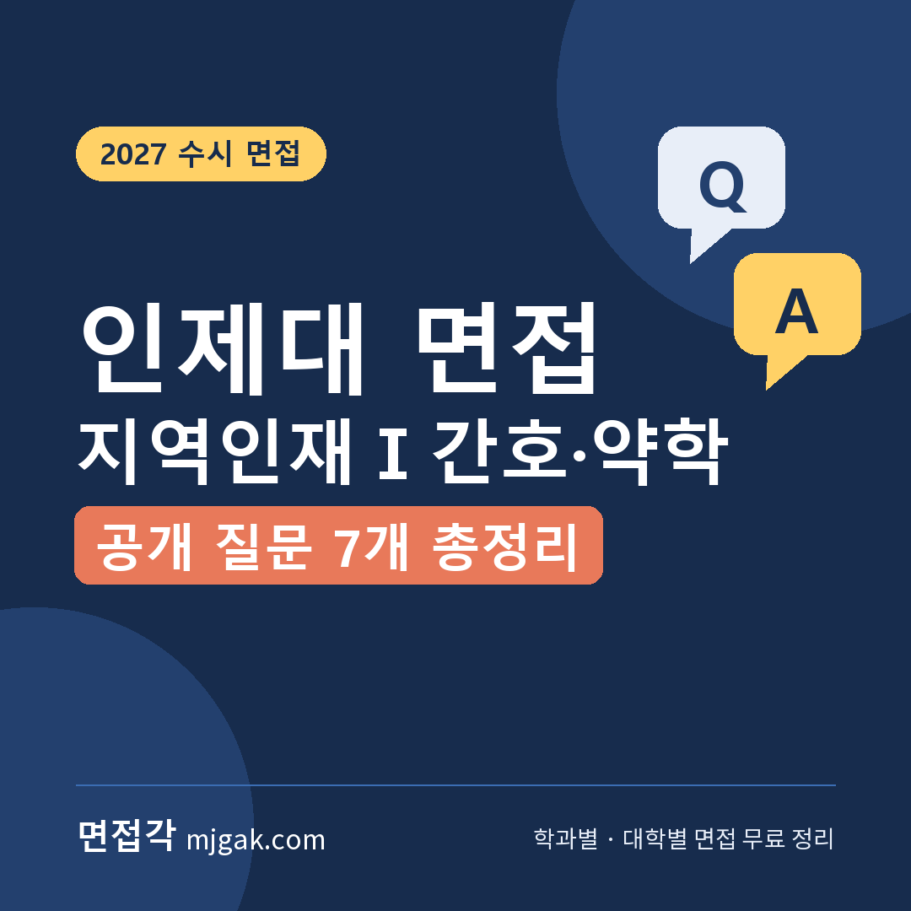
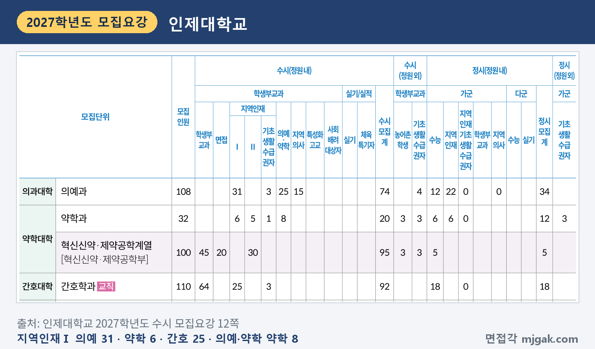
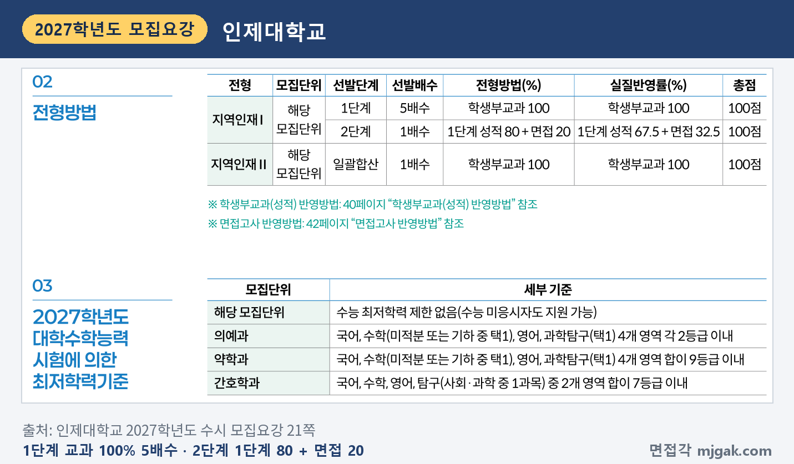
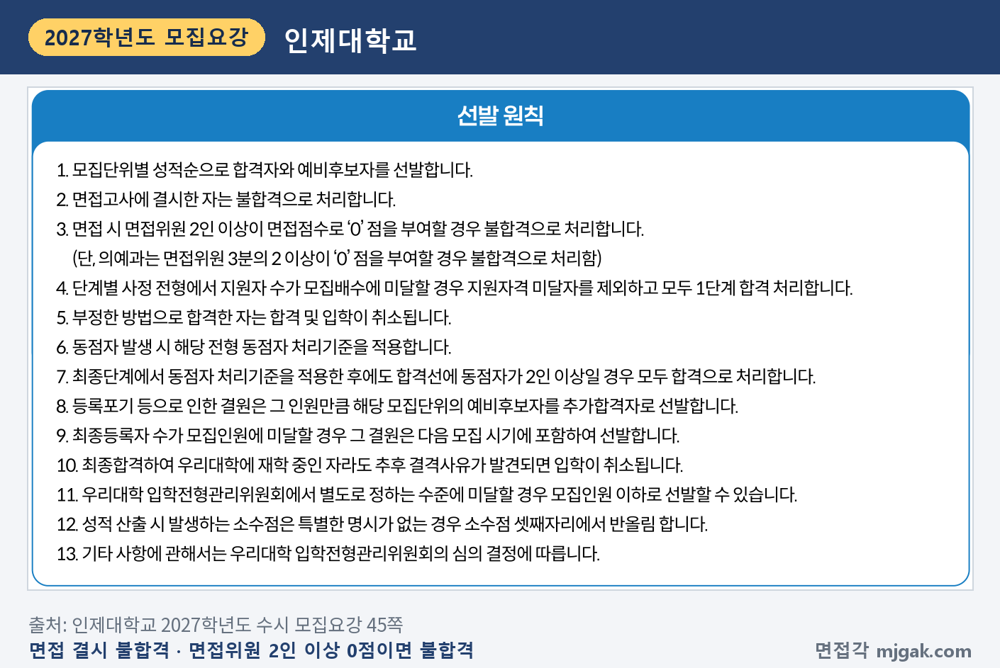
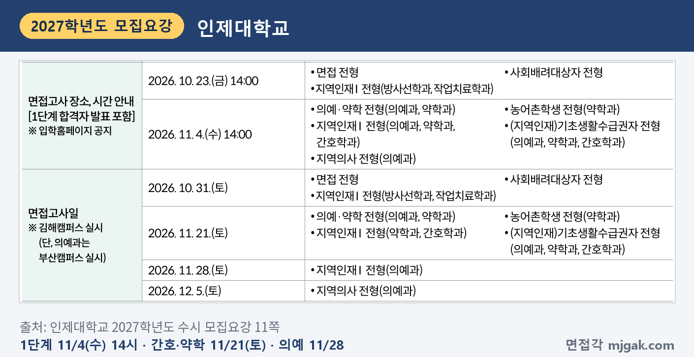
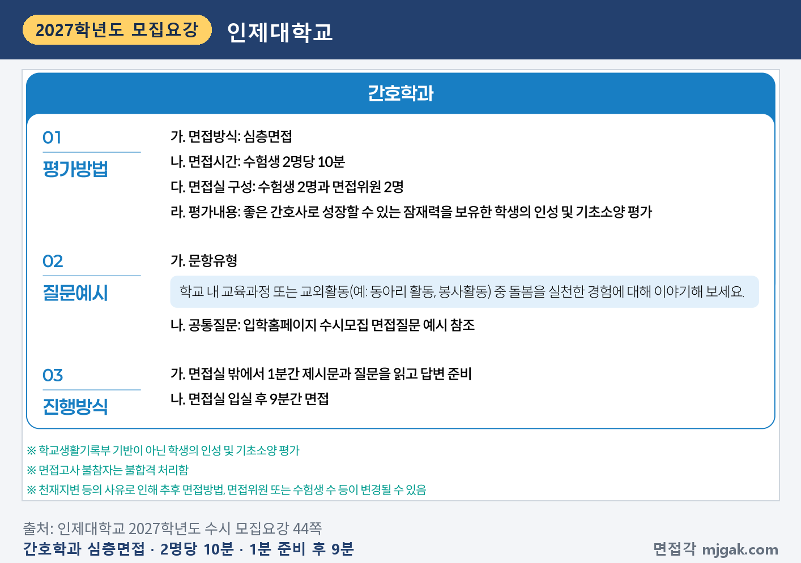
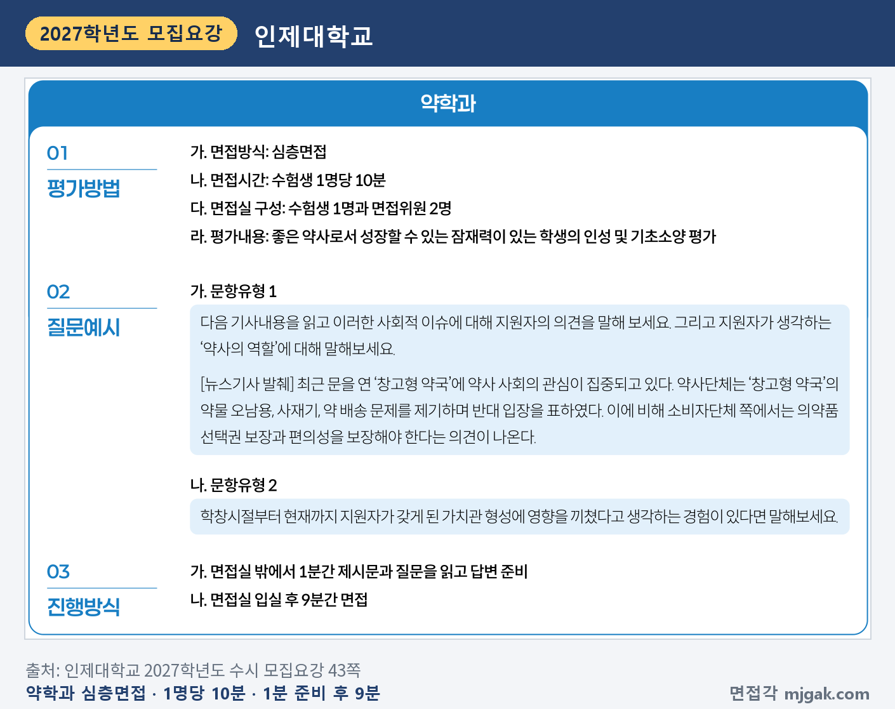
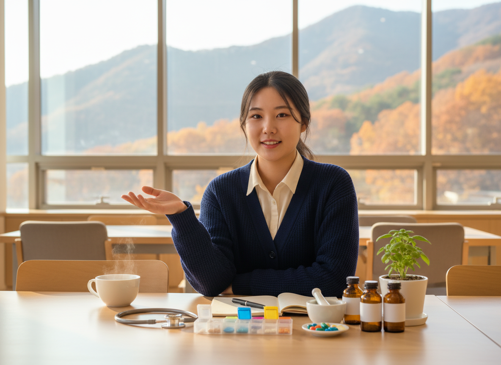
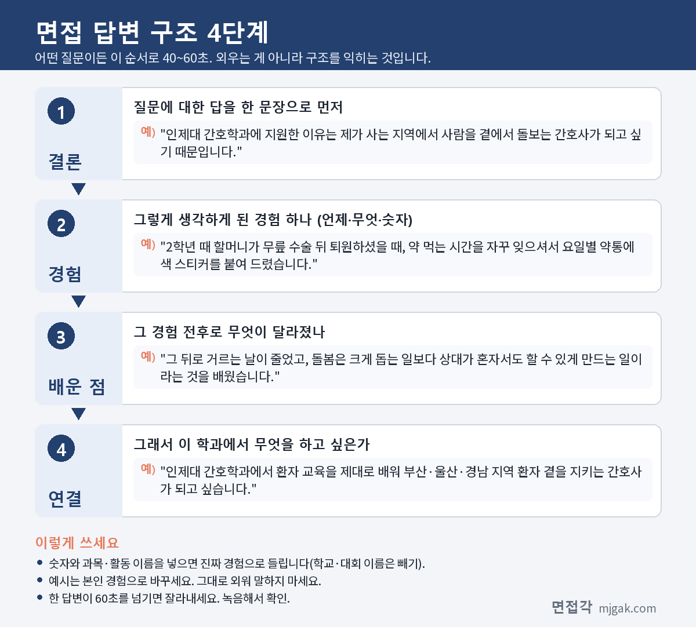
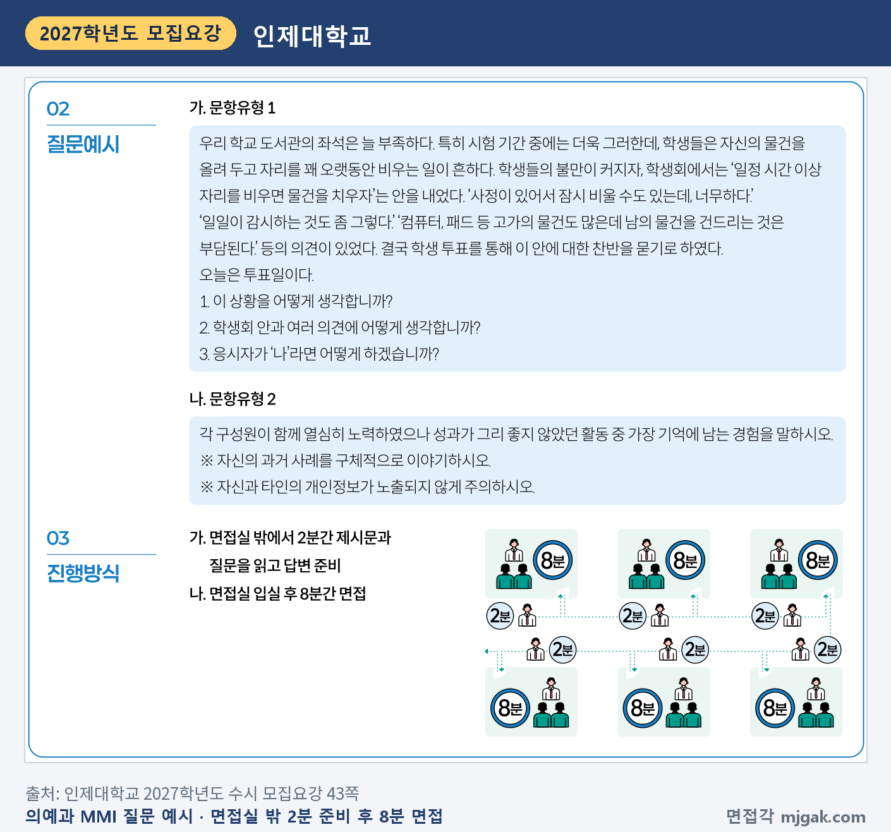

Ctrl+V (서식 유지됨)제목
본문 (이 영역 전체가 복사됩니다)
📷 여기에 이미지 넣기 — 썸네일 — thumb-inje.png (대표 이미지로 지정)
인제대 간호학과·약학과 면접에서 먼저 알아 둘 것은 학교생활기록부를 묻는 면접이 아니라는 점입니다. 모집요강은 면접을 "학교생활기록부 기반이 아닌 학생의 인성 및 기초소양 평가"라고 적었고, 면접실 밖에서 1분 동안 제시문과 질문을 읽은 뒤 9분 동안 답합니다. 지역인재Ⅰ전형은 67명을 뽑고, 1단계 교과 100%로 5배수를 고른 뒤 2단계에서 1단계 성적 80%와 면접 20%를 합산합니다. 1단계 발표는 수능 전인 11월 4일(수) 14:00, 간호학과·약학과 면접은 수능 이틀 뒤인 11월 21일(토)입니다. 이 글은 인제대학교 2027학년도 수시 모집요강과 입학처가 올린 「2027학년도 수시 신입생 모집단위별 면접질문 예시」를 바탕으로 전형 방법, 일정, 면접 방식, 대학이 공개한 질문 7개의 답변법, 준비 순서를 정리하고 의예과는 한 구역으로 묶었습니다. 지역인재Ⅰ 간호학과·약학과와 의예·약학전형 약학과 지원자가 읽으시면 됩니다.
1. 지역인재Ⅰ전형, 2027학년도에는 어떻게 보나
지역인재Ⅰ전형 67명 가운데 의예과 31명, 간호학과 25명, 약학과 6명이 수능 뒤에 면접을 봅니다. 약학과는 의예·약학전형에서도 8명을 뽑고 면접일이 같습니다. (지역인재)기초생활수급권자전형도 의예과 3명, 약학과 1명, 간호학과 3명이 면접을 봅니다(12쪽).
📷 여기에 이미지 넣기 — 캡처 1 — 인제대학교 2027학년도 수시 모집요강 12쪽: inje-2027-units.png
지원자격은 부산·울산·경남 소재 고등학교에서 입학부터 졸업까지 전 교육과정을 이수하고 졸업한 자 또는 졸업예정자이고, 검정고시 합격자는 지원할 수 없습니다. 의예과·약학과·간호학과 지원자 중 2022학년도 이후 중학교 입학자는 수도권이 아닌 지역의 중학교와 부산·울산·경남 고교를 모두 이수하고 재학기간에 해당 지역에 거주해야 합니다(21쪽). 2027학년도에 바뀐 내용입니다(8쪽).
1단계는 학생부교과 100%로 5배수, 2단계는 1단계 성적 80%와 면접 20%이고 실질반영률은 67.5%와 32.5%입니다. 수능 최저는 간호학과가 국어, 수학, 영어, 탐구(사회·과학 중 1과목) 중 2개 영역 합 7등급 이내, 약학과가 국어, 수학(미적분 또는 기하 중 택1), 영어, 과학탐구(택1) 4개 영역 합 9등급 이내입니다(21쪽). 의예·약학전형 약학과도 같은 방법과 같은 최저입니다(22쪽). 이 글에서 계산하면 1단계 규모는 지역인재Ⅰ 간호학과 125명, 약학과 30명, 의예·약학전형 약학과 40명입니다.
📷 여기에 이미지 넣기 — 캡처 2 — 인제대학교 2027학년도 수시 모집요강 21쪽: inje-2027-local1-method.png
면접에 결시하면 불합격이고, 면접위원 2인 이상이 면접점수로 '0'점을 주면 불합격입니다(45쪽). 2단계 동점자는 면접고사 성적이 높은 사람이 앞섭니다(45·46쪽).
📷 여기에 이미지 넣기 — 캡처 3 — 인제대학교 2027학년도 수시 모집요강 45쪽: inje-2027-rules.png
2. 언제 보나: 수능 전 1단계 발표, 수능 이틀 뒤 면접
- 11월 4일(수) 14:00: 1단계 합격자 발표와 면접고사 장소·시간 안내, 입학홈페이지 공지
- 11월 19일(목): 수능
- 11월 21일(토): 지역인재Ⅰ 간호학과·약학과, 의예·약학전형, 농어촌학생전형(약학과), (지역인재)기초생활수급권자전형 면접
- 11월 28일(토): 지역인재Ⅰ 의예과 면접
- 12월 5일(토): 지역의사전형 의예과 면접
- 12월 18일(금) 14:00: 최초합격자 발표
면접은 김해캠퍼스에서 보고, 의예과만 부산캠퍼스에서 봅니다(11쪽). 1단계 발표부터 면접까지 17일이지만 중간에 수능이 있습니다(이 글에서 계산한 값). 합격자 발표는 개별 통지하지 않고 입학홈페이지에 공고합니다(14쪽). 면접 전형과 사회배려대상자전형, 지역인재Ⅰ 방사선학과·작업치료학과의 면접일은 10월 31일(토)입니다(11쪽).
📷 여기에 이미지 넣기 — 캡처 4 — 인제대학교 2027학년도 수시 모집요강 11쪽: inje-2027-schedule.png
3. 면접은 어떻게 보나
간호학과는 심층면접으로 수험생 2명과 면접위원 2명이 한 방에 들어가고, 2명당 10분입니다. 면접실 밖에서 1분간 제시문과 질문을 읽고 답변을 준비한 뒤 입실해 9분간 면접합니다. 평가내용은 "좋은 간호사로 성장할 수 있는 잠재력을 보유한 학생의 인성 및 기초소양 평가"입니다(44쪽).
📷 여기에 이미지 넣기 — 캡처 5 — 인제대학교 2027학년도 수시 모집요강 44쪽: inje-2027-nursing-interview.png
약학과도 심층면접이지만 수험생 1명과 면접위원 2명, 1명당 10분입니다. 1분 준비 후 9분 면접은 같고, 평가내용은 "좋은 약사로서 성장할 수 있는 잠재력이 있는 학생의 인성 및 기초소양 평가"입니다(43쪽). 두 학과 모두 영역별 배점은 모집요강에 없습니다.
📷 여기에 이미지 넣기 — 캡처 6 — 인제대학교 2027학년도 수시 모집요강 43쪽: inje-2027-pharm-interview.png
4. 대학이 공개한 면접 질문 7개와 답변법
질문 3·4·7은 모집요강(43·44쪽), 나머지는 입학처 질문 예시 자료에서 그대로 옮겼습니다. 이 자료는 약학과 질문을 의예·약학전형과 지역인재전형으로 나눠 따로 공개했습니다. 답변 예시는 구조를 보여 주는 가상의 예시이니 본인 경험으로 바꾸세요. 학생부를 보고 묻는 면접이 아니므로 경험은 짧게, 생각과 이유를 길게 말합니다.
▶ 질문 1. "인제대 간호대학에 지원한 동기는 무엇입니까?" (간호학과, 질문 예시 5쪽)
왜 묻나: 간호학과 질문의 의도는 "지원자의 인성 및 의사소통, 전공적합성, 발전가능성 평가"이고, 핵심 키워드에 지원동기가 들어 있습니다(질문 예시 5쪽).
답변 구조: 지원 이유 한 문장 → 계기가 된 장면 → 그때 배운 것 → 대학에서 하고 싶은 것.
답변 예시:
"인제대 간호학과에 지원한 이유는 제가 사는 지역에서 사람을 곁에서 돌보는 간호사가 되고 싶기 때문입니다. 2학년 때 할머니가 무릎 수술 뒤 퇴원하셨을 때, 약 먹는 시간을 자꾸 잊으셔서 요일별 약통에 색 스티커를 붙여 드렸습니다. 그 뒤로 거르는 날이 줄었고, 돌봄은 크게 돕는 일보다 상대가 혼자서도 할 수 있게 만드는 일이라는 것을 배웠습니다. 환자 교육을 제대로 배워 부산·울산·경남 지역 환자 곁을 지키는 간호사가 되고 싶습니다."
주의: 대학 자랑을 늘어놓기보다 내 계기와 이어지는 이유 하나를 말하세요.
▶ 질문 2. "AI가 간호사를 대체할 수 있다고 생각하는지 그 근거에 대해 설명해 보세요." (간호학과, 질문 예시 5쪽)
왜 묻나: 간호학과 질문 의도는 "지원자의 인성 및 의사소통, 전공적합성, 발전가능성 평가"입니다(질문 예시 5쪽). 2명이 함께 들어가니 앞사람과 같은 입장이어도 내 근거를 말해야 합니다.
답변 구조: 내 입장 → 근거 두 가지(AI가 잘하는 일, 사람이 해야 하는 일) → 그래서 간호사가 갖출 것.
답변 예시:
"저는 일부는 대신할 수 있지만 간호사를 대체하지는 못한다고 생각합니다. 활력징후를 기록하고 이상 수치를 알리는 일은 AI가 더 빠를 수 있습니다. 하지만 숫자로 나오지 않는 환자의 불안을 알아채고 설명을 다시 해 드리는 일은 사람이 해야 합니다. 그래서 간호사는 AI가 준 정보를 확인하고 환자에게 맞게 전하는 능력을 갖춰야 한다고 생각합니다."
주의: 확실하지 않은 기술 수치나 사례는 말하지 마세요. 아는 범위에서 논리로 답하면 됩니다.
▶ 질문 3. "학교 내 교육과정 또는 교외활동(예: 동아리 활동, 봉사활동) 중 돌봄을 실천한 경험에 대해 이야기해 보세요." (간호학과, 44쪽)
왜 묻나: 모집요강이 간호학과 문항유형으로 공개한 질문입니다. '돌봄'과 '실천'이 핵심이라 내가 한 행동이 들어가야 합니다.
답변 구조: 상황 → 내가 한 돌봄 행동 → 상대의 반응 → 간호와 연결.
답변 예시:
"반에 다리를 다쳐 목발을 짚은 친구가 있었는데, 이동 수업 때마다 늦어 혼자 자리를 찾느라 힘들어했습니다. 저는 그 친구와 시간표를 맞춰 쉬는 시간이 시작되면 가방을 먼저 옮겨 두었습니다. 처음에는 친구가 미안해해서, 필요할 때만 말해 달라고 약속을 바꿨습니다. 돕는 사람의 방식보다 받는 사람이 편한 방식이 먼저라는 것을 배웠습니다."
주의: 개인정보가 드러나지 않게 이름이나 학교명은 빼세요.
📷 여기에 이미지 넣기 — 이미지 1 — 제미나이 생성: 창밖으로 늦가을 산 능선이 보이는 캠퍼스 라운지에서 청진기·요일별 약통·막자사발·라벨 없는 약병 옆에서 답하는 여학생(실사) / "제미나이 프롬프트 1" · gem-inje-1.png
(AI로 만든 이미지로, 실제 캠퍼스와 다를 수 있습니다)
▶ 질문 4. "다음 기사내용을 읽고 이러한 사회적 이슈에 대해 지원자의 의견을 말해 보세요. 그리고 지원자가 생각하는 '약사의 역할'에 대해 말해보세요." (약학과, 43쪽 · 질문 예시 3쪽 의예·약학전형)
제시문은 창고형 약국을 두고 약사단체가 약물 오남용, 사재기, 약 배송 문제를 들어 반대하고, 소비자단체 쪽은 의약품 선택권 보장과 편의성을 말한다는 내용입니다(43쪽).
왜 묻나: 의예·약학전형 질문 의도는 "약사의 사회적 역할, 가치관, 약학과 지원 동기 확인"입니다(질문 예시 3쪽).
답변 구조: 양쪽 주장 한 줄씩 → 내 의견 → 약사의 역할 한 문장.
답변 예시:
"약사단체는 안전을, 소비자단체는 편리함을 걱정하고 있습니다. 저는 싸고 편하게 사는 것은 좋지만, 여러 약을 한꺼번에 사면 성분이 겹칠 위험이 커진다고 생각합니다. 그래서 약사의 역할은 판매보다 확인에 있다고 봅니다. 이미 먹고 있는 약을 묻고, 겹치는 성분을 알려 주는 상담이 창고형 약국에서도 있어야 합니다."
주의: 한쪽을 비난하지 말고 두 입장을 먼저 정리하세요. 1분 준비 때 양쪽 주장에 밑줄을 긋는 연습을 합니다.
▶ 질문 5. "위와 같은 변화가 가속화된다고 전제할 때 아래에 대해서 답변해 보세요. 1) 약사의 역할에서 지켜나가야 할 것과 변화되어야 할 것은 무엇이 있을까요? 2) 약사가 가질 수 있는 기회 요인과 위험 요인은 무엇이 있을까요?" (약학과 지역인재전형, 질문 예시 4쪽)
앞의 제시문은 창고형 약국과, 다이소의 이른바 "5,000원 건강기능식품" 판매 이야기입니다.
왜 묻나: 지역인재전형 약학과 질문 의도는 "약사의 사회적 역할, 타인과의 협업의 중요성"입니다(질문 예시 4쪽). 묻는 것이 네 가지라 순서대로 답해야 빠지지 않습니다.
답변 구조: 지킬 것 → 바뀔 것 → 기회 → 위험, 각각 한두 문장.
답변 예시:
"지켜야 할 것은 약을 건넬 때 복용법과 함께 먹으면 안 되는 것을 설명하는 일입니다. 바뀌어야 할 것은 약국 안에서만 기다리지 않고 건강기능식품까지 함께 상담하는 방식입니다. 기회는 사람들이 건강 제품에 관심이 많아져 상담할 일이 늘어나는 것이고, 위험은 싸게 산 제품을 약과 함께 먹는 사람이 늘어나는 것입니다."
주의: 번호가 있는 질문은 "첫째, 둘째"로 답하면 면접위원이 따라오기 쉽습니다.
▶ 질문 6. "지원자가 의약품안전관리 발표를 준비하는 5명으로 구성된 팀의 팀장을 맡았다고 가정합니다. 한 팀원이 자료를 제출하지 않아 다른 팀원들이 불만을 제기하고 있습니다. 발표는 이틀 후입니다. 이 상황에서 팀장으로서 지원자는 가장 먼저 무엇을 하겠습니까? 팀의 목표와 개인의 입장을 어떻게 조율하겠습니까? 팀원 간 신뢰를 유지하기 위해 어떤 노력을 하겠습니까?" (약학과 지역인재전형, 질문 예시 4쪽)
왜 묻나: 핵심 키워드가 "약사 역할, 협업"입니다(질문 예시 4쪽). 상황형이라 행동 순서가 분명해야 합니다.
답변 구조: 가장 먼저 할 일 → 목표와 입장 조율 → 신뢰 유지 방법.
답변 예시:
"가장 먼저 자료를 내지 않은 팀원에게 따로 사정을 묻겠습니다. 이유를 모르고 다그치면 이틀 안에 일이 더 늦어질 수 있기 때문입니다. 사정이 있다면 남은 일을 오늘 안에 끝낼 수 있는 크기로 줄여 맡기고, 부족한 부분은 제가 나눠 맡겠다고 팀에 알리겠습니다. 발표 뒤에는 다 같이 무엇이 어려웠는지 이야기하는 시간을 갖겠습니다."
주의: 같은 자료의 문항유형 3은 실습 중 실수가 잦은 동료를 어떻게 도울지 묻습니다(질문 예시 4쪽). 비난보다 함께 확인하는 방법을 말하는 연습을 같이 하세요.
▶ 질문 7. "학창시절부터 현재까지 지원자가 갖게 된 가치관 형성에 영향을 끼쳤다고 생각하는 경험이 있다면 말해보세요." (약학과, 43쪽)
왜 묻나: 모집요강의 약학과 문항유형 2입니다. 경험보다 그 경험으로 생긴 가치관이 답의 중심입니다.
답변 구조: 가치관 한 문장 → 계기 → 그 뒤 바뀐 행동 → 약사와 연결.
답변 예시:
"제 가치관은 '모르면 확인한다'입니다. 중학교 때 감기약과 두통약을 함께 먹고 속이 크게 불편했던 적이 있는데, 약사님이 두 약에 같은 성분이 들어 있다고 알려 주셨습니다. 그 뒤로는 약을 먹기 전에 성분표를 확인하는 습관이 생겼습니다. 환자가 확인하지 못한 것을 대신 확인해 주는 약사가 되고 싶습니다."
주의: 가치관을 거창한 단어로 말하기보다 생활 속 행동으로 보여 주세요.
5. 답변은 이 4단계로 만드세요
결론 → 경험 → 배운 점 → 연결 순서로 말하세요. 간호학과는 2명이 10분을 나누니 답 하나를 40~60초로 줄이는 연습이 필요합니다. 아래 도식은 질문 1을 4단계로 쪼갠 것입니다.
📷 여기에 이미지 넣기 — 도식 — structure-inje.png
6. 의예과는 전형마다 날짜가 다릅니다
인제대 의예과는 의예·약학전형 25명이 11월 21일(토), 지역인재Ⅰ 31명이 11월 28일(토), 지역의사전형 15명이 12월 5일(토)에 면접을 보고, 세 전형 모두 1단계 발표가 11월 4일(수) 14:00입니다(11·12쪽). (지역인재)기초생활수급권자전형 의예과 3명도 11월 21일입니다. 지역의사전형은 2027학년도 신설로 광역권 4명, 진료권 11명이고(8쪽), 의사면허 취득 후 의무복무 지역에서 10년간 의무복무하는 지역의사가 되려는 사람이 대상입니다(23쪽).
면접은 다중미니면접(MMI)으로 면접실 6개, 총 60분(면접실당 10분), 수험생 1명과 면접위원 2명입니다(42쪽). 면접실 밖에서 2분간 제시문과 질문을 읽고 8분간 면접하며, 공개된 질문은 도서관 좌석 문제와 성과가 좋지 않았던 협업 경험입니다(43쪽). 면접위원 3분의 2 이상이 '0'점을 주면 불합격입니다(45쪽). 수능 최저는 세 전형 모두 국어, 수학(미적분 또는 기하 중 택1), 영어, 과학탐구(택1) 4개 영역 각 2등급 이내입니다(21·22·24쪽).
📷 여기에 이미지 넣기 — 캡처 7 — 인제대학교 2027학년도 수시 모집요강 43쪽: inje-2027-med-mmi.png
7. 10월 31일(토)부터 면접 당일까지 준비 순서
10월 31일(토) ~ 11월 3일(화): 수능 공부가 먼저입니다. 돌봄, 협업, 실수 극복, 가치관 경험을 하나씩 골라 두 줄로 적습니다.
11월 4일(수) 14:00, 1단계 발표: 입학홈페이지에서 면접 장소와 시간을 확인합니다.
11월 5일(목) ~ 18일(수): 주말마다 짧은 제시문을 1분 읽고 9분 답하는 연습을 한 번씩 합니다. 질문 2·5처럼 묻는 것이 여러 개인 질문은 번호를 붙여 답합니다.
11월 19일(목): 수능.
11월 20일(금): 질문 7개를 녹음하며 한 번씩 답하고, 김해캠퍼스까지 가는 길을 확인합니다. 새 답변은 만들지 않습니다.
11월 21일(토), 면접: 공지된 시간보다 일찍 도착합니다.
12월 18일(금) 14:00, 최초합격자 발표: 12월 21일(월) ~ 23일(수) 온라인 문서등록을 놓치지 마세요(11쪽).
8. 인제대 지역인재Ⅰ 면접 자주 묻는 것들
Q. 학생부 내용을 묻나요?
A. 모집요강은 면접을 "학교생활기록부 기반이 아닌 학생의 인성 및 기초소양 평가"라고 밝힙니다(44쪽). 학생부 암기보다 제시문을 읽고 내 생각을 말하는 연습이 필요합니다.
Q. 간호학과는 다른 수험생과 함께 들어가나요?
A. 네. 수험생 2명과 면접위원 2명이고 2명당 10분입니다(44쪽).
Q. 지역인재Ⅰ과 의예·약학전형 약학과에 같이 지원할 수 있나요?
A. 모든 전형 간 복수지원이 가능하고 해당 전형의 지원자격을 충족해야 합니다(14쪽). 두 전형 약학과 면접일이 모두 11월 21일이고 면접 응시순서는 조정할 수 없다고 적혀 있으니(14쪽), 11월 4일 공지된 시간을 바로 확인하세요.
Q. 수능 최저가 있나요?
A. 간호학과는 2개 영역 합 7등급, 약학과는 4개 영역 합 9등급 이내입니다(21·22쪽).
Q. 면접 복장은 어떻게 하나요?
A. 모집요강의 면접 안내에는 복장 규정이 없습니다. 10월 31일 면접의 입학처 공지(2026-10-23)에는 "단정한 복장(고교 교복 착용 불가)"과 신분증·필기구·수험표 지참이 적혀 있었습니다. 11월 21일 면접 공지도 같은지 확인하세요.
9. 면접 전날 체크리스트
□ 지원 동기를 계기 하나와 함께 50초 안에 말할 수 있다
□ 돌봄을 실천한 경험을 내 행동 중심으로 말할 수 있다
□ 제시문을 1분 안에 읽고 양쪽 입장을 한 줄씩 정리할 수 있다
□ 묻는 것이 여러 개인 질문에 "첫째, 둘째"로 답할 수 있다
□ 답변에 이름과 학교명이 나오지 않는지 녹음으로 확인했다
□ 11월 4일 공지된 면접 장소와 시간을 확인했다
□ 11월 4일 공지에서 준비물을 확인하고 챙겼다(10월 31일 면접은 신분증·필기구·수험표)
10. 같은 시기에 면접 보는 대학
인제대와 같이 지원했다면 이어서 보세요.
▷ 경북대 학생부종합 지역인재전형 면접 총정리 (11월 21일)
▷ 아주대 ACE전형 면접 총정리 (11월 22·28·29일)
▷ 경상국립대 학생부종합 일반전형(면접) 총정리 (11월 25일·26일)
11. 함께 보면 좋은 글
인제대 지역인재Ⅰ 면접은 1분 동안 읽은 제시문과 질문에 내 생각과 이유를 순서대로 말하고, 좋은 간호사와 약사로 자랄 사람인지 보여 주는 자리입니다.
※ 이 글의 내용은 인제대학교 2027학년도 수시 모집요강과 인제대 입학처 공지(2026-10-22)의 「2027학년도 수시 신입생 모집단위별 면접질문 예시」에서 인용했습니다. 괄호 안 쪽수는 모집요강에 인쇄된 쪽수이고, "질문 예시 ○쪽"은 그 자료의 쪽수입니다. 질문은 대학이 공개한 예시이며 실제 면접 문항과 다를 수 있습니다. 면접 장소와 시간은 11월 4일 입학홈페이지 공지를 꼭 확인하세요.
인제대를 포함한 76개 대학의 2027학년도 면접 정보와 71개 학과별 면접 질문·답변 예시, 대학이 공개한 실제 면접 기출을 무료로 정리한 사이트입니다. 회원가입 없이 바로 볼 수 있고, 질문을 무작위로 뽑아 60초 타이머로 연습하는 모의 면접도 있습니다.
태그 (#은 에디터가 자동으로 붙이므로 그대로 붙여 넣어도 됩니다)
넣을 이미지 목록 (docs/promo/img 폴더)










제미나이 프롬프트 1 — 창밖으로 늦가을 산 능선이 보이는 캠퍼스 라운지에서 청진기·요일별 약통·막자사발·라벨 없는 약병 옆에서 답하는 여학생(실사) (4:3) — 제미나이에 그대로 붙여 넣어 이미지를 만드세요